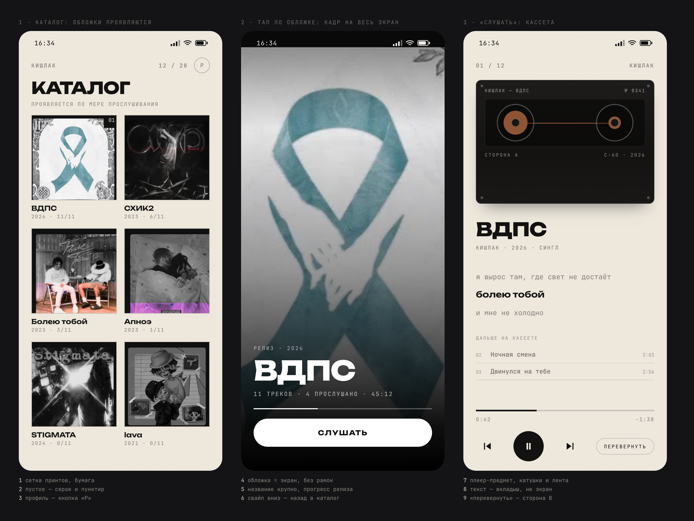
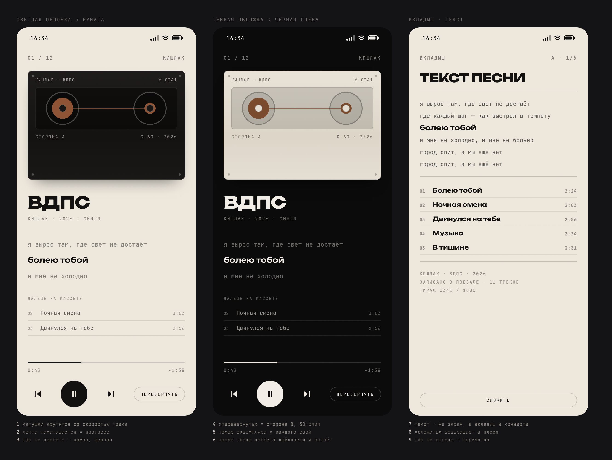
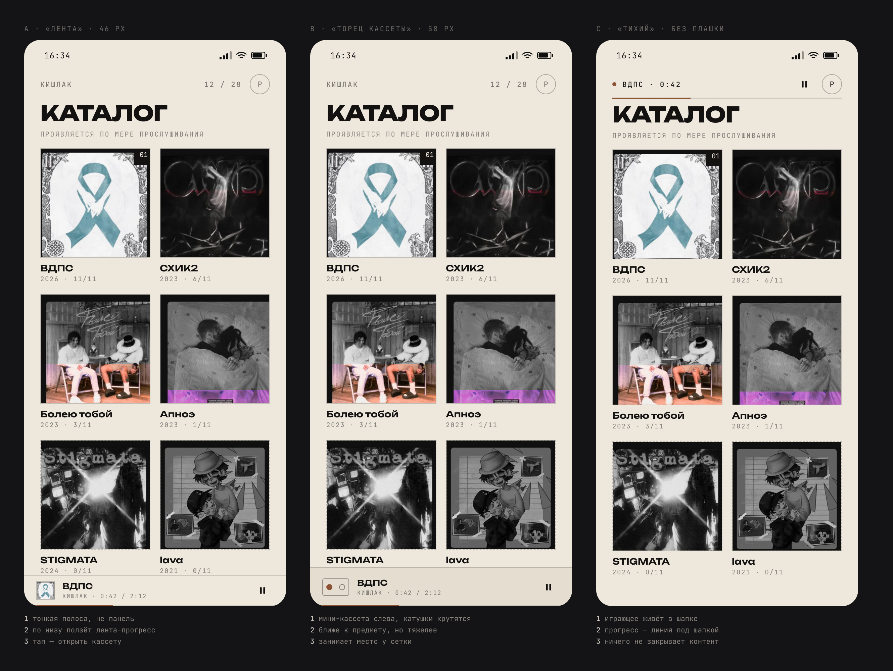
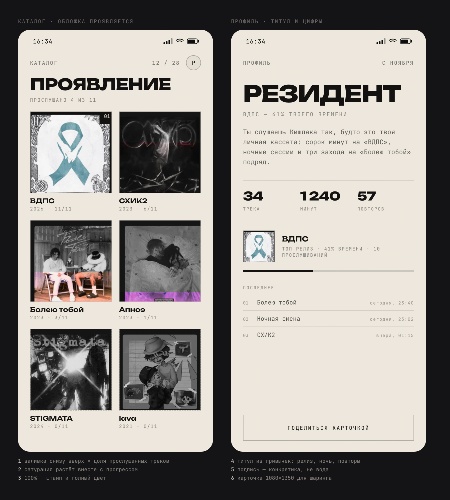
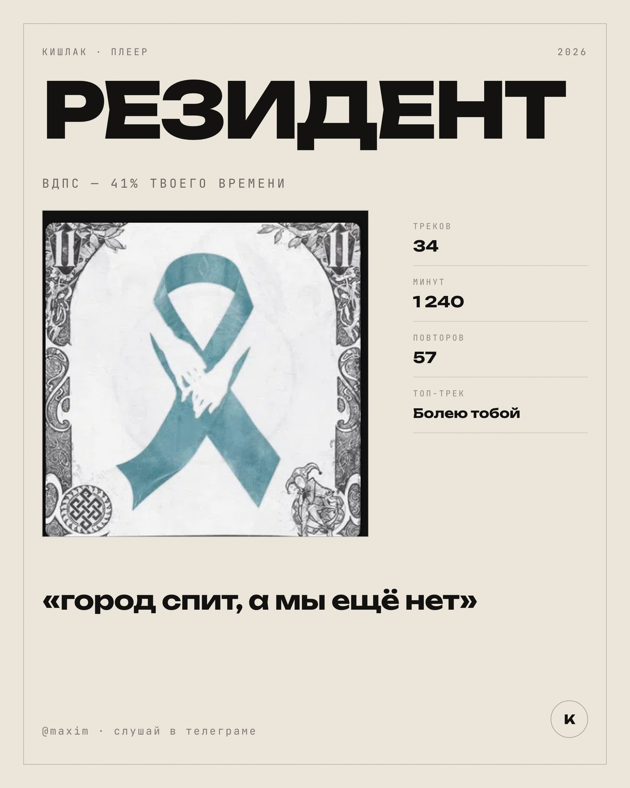
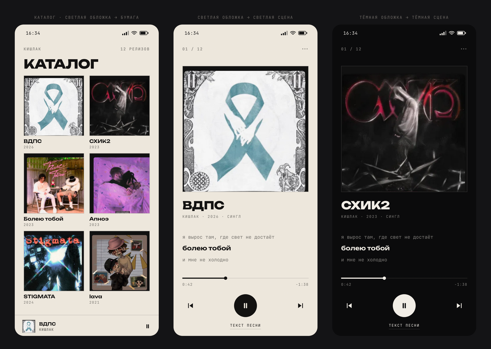
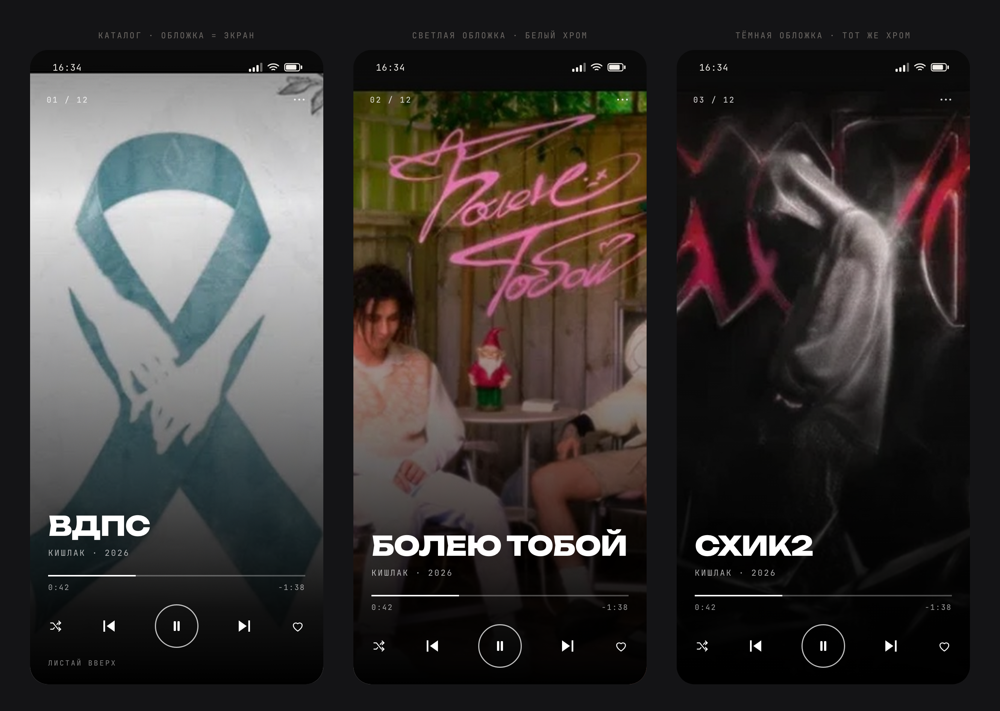
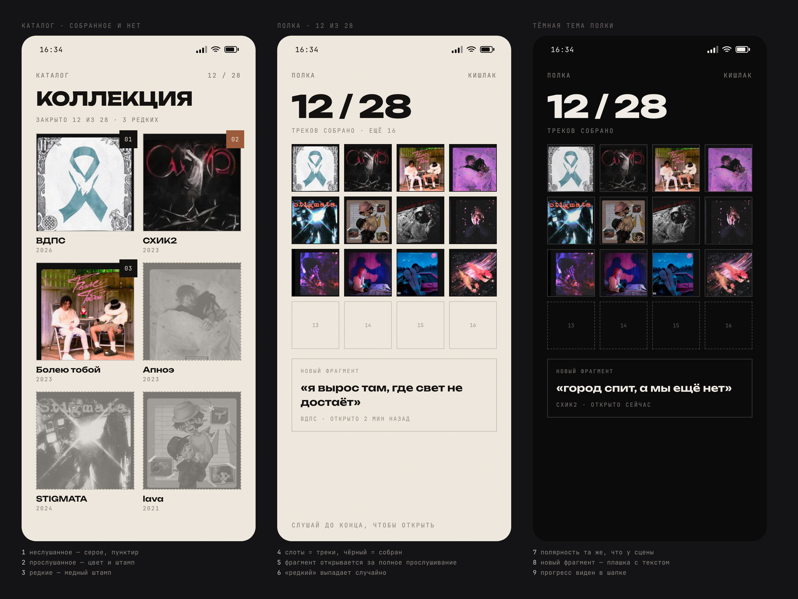
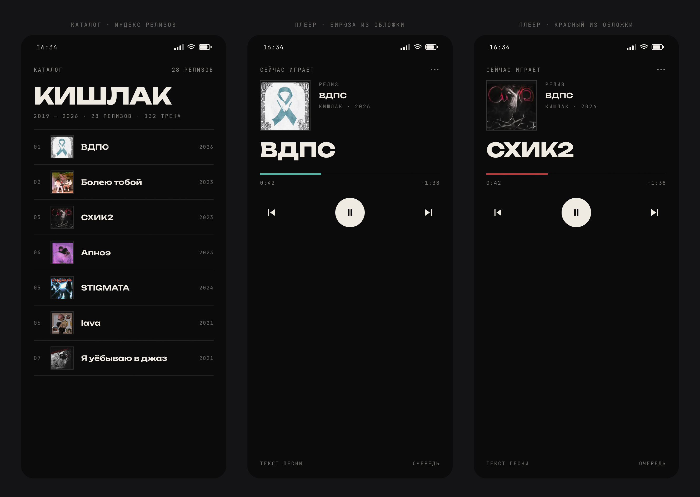

КИШЛАК · ПЛЕЕР
макеты · 31 октября 2026
Финальная связка
Каталог → тап по обложке → кадр релиза → «Слушать» → кассета. Полярность (бумага / чернота) выбирает обложка.

3 экрана: каталог, кадр релиза, кассета
Живой макет — открыть в браузере
Кассета
Светлая обложка — бумага, тёмная — чернота. Катушки, лента, номер экземпляра, вкладыш с текстом.

Плеер: кассета, светлая и тёмная сцена, вкладыш
Мини-плеер
Принято: A «Лента» как основа, C «Тихий» на главной. B «Торец кассеты» уходит в скины.

Три варианта: лента / торец кассеты / тихий
Фан-слой
Обложки проявляются по прослушанному. Профиль: титул, цифры, топ-релиз — из шапки каталога.

Каталог с проявлением + экран профиля

Карточка шаринга 1080×1350 — после запуска
Ранние варианты
Печать и Сцена — из них выросли каталог и кадр релиза. Коллекция и Зин — идеи и отказ.

Печать — принят как основа каталога

Сцена — вошла в кадр релиза

Коллекция — идея на второй слой

Зин — отклонён
Документация: docs/MAP.md — карта проекта, docs/design/ — система и экраны, docs/spec/fan-layer.md — фан-слой.